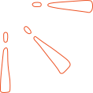

Virksomhedssite
Jeg var syg i starten af dette forløb, så jeg nåede desværre ikke at lave videoen. Jeg var dog heldig at kunne hoppe ind i en rigtig god gruppe, da jeg var blevet rask. Vi havde samarbejde med Charlotte, der er ejer af en lille cafe ved navn 'Tak for Kaffe'. Gennem skriftlige interviews og et besøg hos 'Tak for Kaffe' kunne vi danne os indsigter i Charlottes behov, hendes UPS samt, hvad hun skulle kunne bruge sin hjemmeside til. Vi brugte Figma til at skabe desktop- og mobilprototyper. Dette gav os mulighed for at få feedback fra Charlotte og brugere tidligt i vores proces. Muligheden for realtids-samarbejde i Figma og Github, forbundet til VSCode, gjorde det nemt for os at skabe forskellige prototyper, hvor alle holdmedlemmernes interessenter og ønsker kom til udtryk gennem designiterationerne. Dette forløb var en lærerig oplevelse ift. kommunikation med gruppemedlemmer og samarbejdspartnere.
